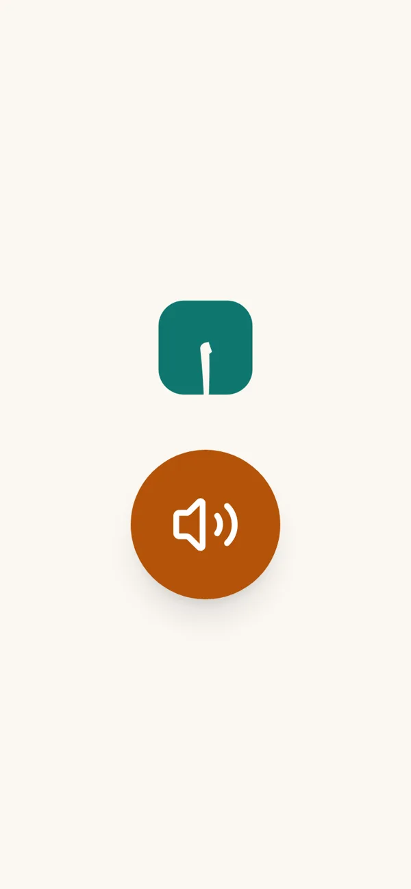

مش محتاج تعرف تقرا عشان تبدأ. اضغط على الميكروفون واتكلّم مع بداية، وهي هتعلّمك أول حرف دلوقتي.
You don't need to read to start. Tap the microphone and talk to Bedaya. She teaches your first letter right now, in Egyptian Arabic.
عرض مجاني لمدة دقيقتين. بيستخدم الميكروفون ومفيش تسجيل. متقولش بيانات شخصية.A free 2‑minute demo. It uses your microphone and nothing is recorded. Please don't share personal details. Bedaya speaks Arabic.
كل جلسة قصيرة وبسيطة، وبتخلص وإنت قريت حاجة بنفسك.
Every session is short and simple, and it ends with you reading something yourself.
بيشتغل على أي تليفون رخيص، من المتصفح، من غير متجر تطبيقات. ومفيش أي محتوى ديني أو سياسي: قراية وكتابة بس.Works on any cheap phone, in the browser, with no app store. No religious or political content: reading and writing only.

adults in Arab countries cannot read or write; about 62% are women.
بالغ في الدول العربية لا يقرؤون ولا يكتبون، نحو ٦٢٪ منهم نساء.
ALECSO Observatory, 2020of Egyptians aged 10 and over cannot read or write.
من المصريين في سن ١٠ سنوات فأكثر لا يقرؤون ولا يكتبون.
CAPMAS, 2024جمعيات محو الأمية، والشركات، والوزارات، والمستثمرين: يسعدنا نعرض عليكم بداية.
Literacy NGOs, employers, ministries and investors: we'd love to show you Bedaya.